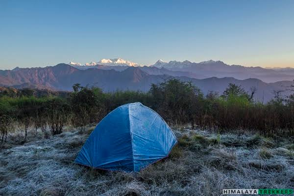
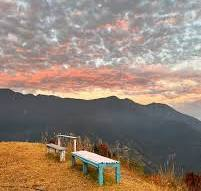

Tourism of West Sikkim

Pelling
Offers breathtaking views of Mount Kanchenjunga, monasteries, and waterfalls.

Yuksom
First capital of Sikkim and gateway to trekking routes.

Foktey Dara
Panoramic Himalayan views and peaceful surroundings.

Chewabhanjyang
Beautiful Indo-Nepal border area with green hills.